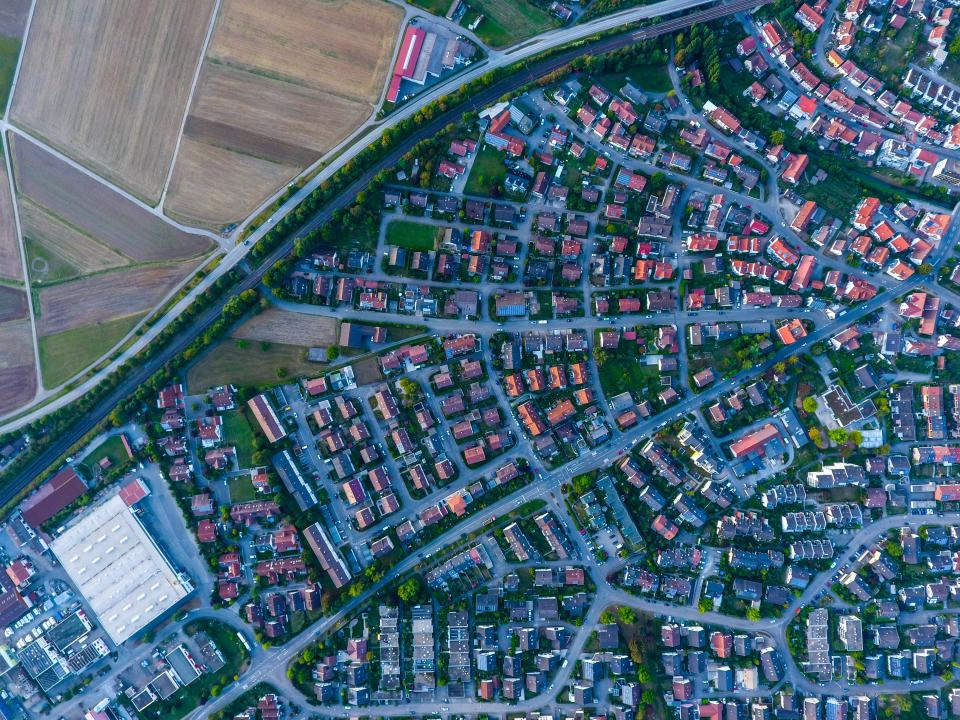
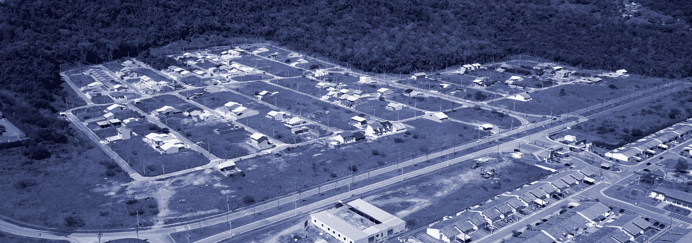
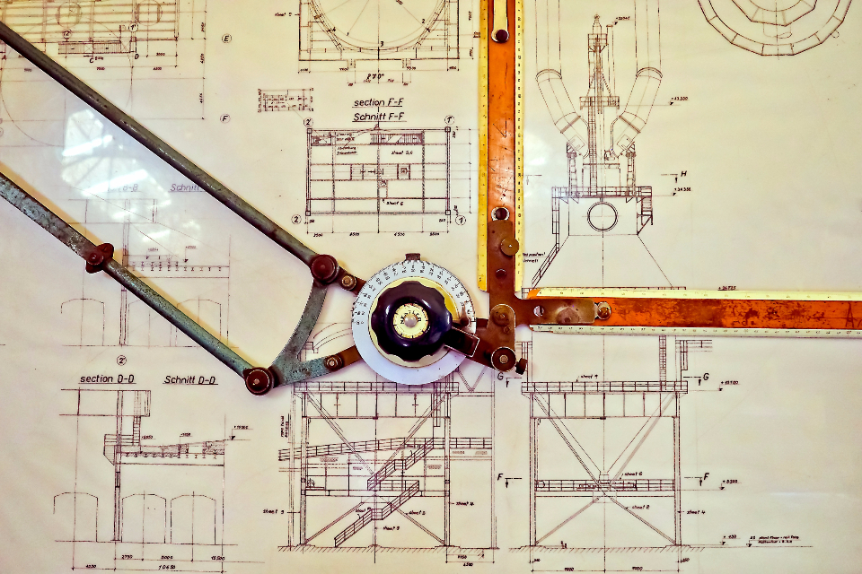
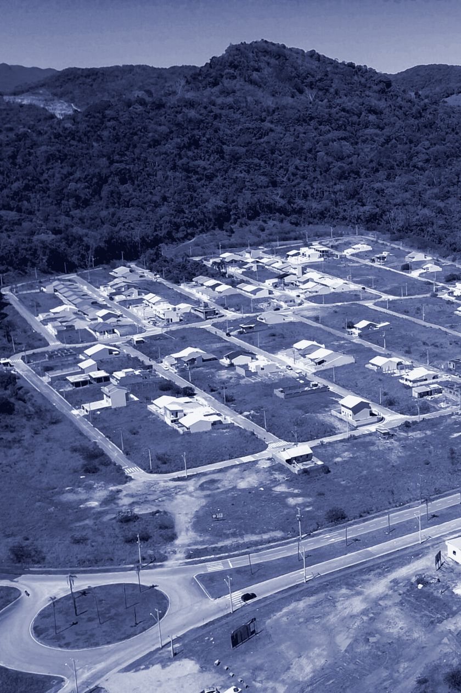

Tudo em um só lugar: projetos e aprovação de loteamentos
Pacotes personalizados de projetos para loteamentos.
Projetos executivos de urbanismo, terraplenagem, drenagem e saneamento, com gestão da aprovação junto aos órgãos competentes. Especialistas em loteamentos no estado de São Paulo (GRAPROHAB).
Retorno da análise inicial em até 5 dias úteis

- Urbanismo
- Terraplenagem
- Drenagem
- Água e esgoto
- anos de experiência
- 12+
- milhões de m² projetados
- 10,8
- projetos completos
- 230+
- lotes projetados
- 9.400+
Método Athom: engenharia de valor, integração e aprovação
Quem projeta raramente aprova. Quem aprova raramente projeta.
No mercado, a engenharia e a aprovação costumam ficar em mãos diferentes: o projetista entrega as pranchas e sai de cena, a consultoria conduz o processo com projetos que não fez. Quando surge uma exigência, cada um aponta para o outro, e o seu cronograma para.
Na Athom, a mesma equipe que projeta responde pelas devolutivas e conduz o trâmite até o registro. Quem projeta sabe exatamente o que o órgão vai pedir.
| Projetista tradicional | Consultoria de aprovação | Athom | |
|---|---|---|---|
| Projetos executivos | Sim | Não | Sim |
| Compatibilização entre disciplinas | às vezes | às vezes | Sim, modelagem BIM |
| Graprohab, prefeitura e cartório | Não | Sim | Sim |
| Um único responsável | Não | Não | Sim |

Engenharia integrada para transformar projetos em empreendimentos viáveis
Integramos urbanismo, infraestrutura, licenciamento e gestão técnica para reduzir riscos, otimizar custos e conduzir seu empreendimento com mais eficiência da concepção à aprovação.


-
Revisões sem fim por incompatibilidade
Modelamos e compatibilizamos 100% das disciplinas de infraestrutura e urbanismo em plataforma BIM, entregando um projeto executivo pronto para construir, sem aditivos surpresa na obra. Eliminamos revisões e retrabalhos na execução.
-
Processo parado por acúmulo de devolutivas
Assumimos a gestão técnica do processo, analisamos cada devolutiva e elaboramos respostas com embasamento multidisciplinar. Atuamos para destravar o processo, atender às exigências e conduzir o loteamento até a aprovação final e o registro em cartório. Somos especialistas na legislação do Estado de São Paulo e nos trâmites do GRAPROHAB.
-
Atraso no cronograma de lançamento comercial
Desenvolvemos as disciplinas de forma integrada e em paralelo. Alinhamos os projetos de urbanismo, infraestrutura e licenças ambientais desde o primeiro dia. Fazemos o acompanhamento ativo nos órgãos para garantir que o produto esteja aprovado dentro do cronograma comercial planejado.
-
Custos elevados com obras de infraestrutura
Aplicamos engenharia de valor na concepção urbanística e nos projetos de infraestrutura. Otimizamos a terraplenagem e o dimensionamento das redes hidráulicas para respeitar o terreno natural, reduzindo o custo de implantação da obra sem comprometer a aprovação técnica.
Serviços
Do desenho urbanístico ao registro em cartório. Escolha o pacote que corresponde ao estágio do seu loteamento.
Urbanismo
Para quem é
Loteadores que possuem a gleba e precisam desenhar um loteamento rentável, atrativo e viável frente às diretrizes municipais.
Objetivo
Maximizar o VGV (Valor Geral de Vendas) da área respeitando a topografia natural, a legislação local e o aproveitamento eficiente de lotes.
O que contempla
- Estudo de viabilidade técnica e ocupação do solo.
- Projeto urbanístico conceitual e executivo (arruamento, quadras, lotes e áreas públicas).
- Memorial descritivo e justificativo do empreendimento.
- Memoriais individuais de lotes e áreas institucionais/verdes.
Projetos executivos de infraestrutura em BIM
Para quem é
Loteadores que já possuem o desenho urbanístico aprovado ou em andamento, mas precisam da engenharia de precisão para canteiro de obras e concessionárias.
Objetivo
Eliminar conflitos entre redes hidráulicas e terraplenagem antes da execução, evitando aditivos de contrato e retrabalho na obra.
O que contempla
- Projeto de terraplenagem e movimentação de terra.
- Projeto de drenagem de águas pluviais.
- Projeto de água e esgoto.
- Compatibilização e testes de interferência de redes em modelo 3D (BIM).
Ciclo completo de loteamento
Para quem é
Loteadores que buscam gestão única, previsibilidade de prazos e a entrega do produto totalmente aprovado, da gleba bruta ao cartório.
Objetivo
Assumir a responsabilidade total pelo trâmite e pela engenharia, entregando o loteamento pronto para comercialização e construção.
O que contempla
- Urbanismo e estudos: viabilidade técnica, projeto urbanístico, sinalização viária, pavimentação e Estudo de Impacto de Vizinhança (EIV).
- Projetos executivos BIM: terraplenagem, drenagem, água e esgoto.
- Estudos ambientais: laudo técnico de recursos naturais, planta urbanística ambiental, projetos de revegetação e compensação ambiental (Graprohab).
- Gestão ativa de aprovação: estratégia e regularização da gleba, aprovação municipal, concessionárias, colegiado Graprohab e Cartório de Imóveis.
Destravamento regulatório
Para quem é
Loteadores com processos paralisados, acumulando exigências pendentes ou enfrentando gargalos técnicos nos órgãos.
Objetivo
Destravar o processo parado e avançar até a emissão do decreto de aprovação e registro em cartório.
O que contempla
- Análise diagnóstica e conferência analítica de comunique-se e devolutivas.
- Ajustes multidisciplinares em projetos e documentos (urbanístico, infraestrutura e ambiental).
- Emissão de respostas fundamentadas e atendimento de exigências no Graprohab, prefeituras, concessionárias e cartórios.
Precisa de apenas uma disciplina?
A Athom é um escritório de projetos e aprovação. Não executamos obras.

Projetos em destaque
-
+50 novos lotes
Redesenhamos a solução de drenagem e área permeável com base na legislação, melhorando o VGV.
-
Obra liberada após 45 dias parada
Redes de água, esgoto e drenagem refeitas e compatibilizadas em 3D.
-
Loteamento travado por um ano
Após o método Athom, os resultados vieram já no primeiro mês.
-
Registro liberado
10 meses de impasse no cartório resolvidos.
Precisa destravar seu loteamento ou de um pacote personalizado de serviços?
Conte em que estágio está o seu empreendimento. Um especialista da Athom avalia o cenário e indica o caminho mais rápido e seguro até a aprovação.
- (19) 2218-3135
- contato@athomprojetos.com.br
- Av. Antônio Baptista Piva, 2718, Sala 5, Paulínia/SP
- Segunda a sexta, das 8h às 18h